solar cooking experiment
2023.11.30
Salish Sea
A summer of solar cooking
In the spring of 2023 we learned about solar evacuated tube cooking, an efficient way of preparing food with the sun. We spent the summer experimenting with such a cooker, this is what we learned.
We tested the solar cooker while in the Salish Sea, where summer daytime temperatures range from 12-32°C. We also experimented in 5°C temperatures.
Just like our work schedule became tied to the sun, so too we began to plan meals with the weather. If we wanted to eat beans, or bread, we would check the forecast to make sure the next day's weather would permit it. If there was sun, we'd pre-soak the beans or pre-mix the dough before bed so everything would be ready to cook come morning.
A full day of sun allowed us to cook entire meals. For example, we'd cook chickpeas for hummus in the morning, then we'd bake bread after lunch for dinner. On days of half sun we'd plan meals with a shorter cooking time, like lentils, or seitan, while a rainy day would not allow for any solar cooking.
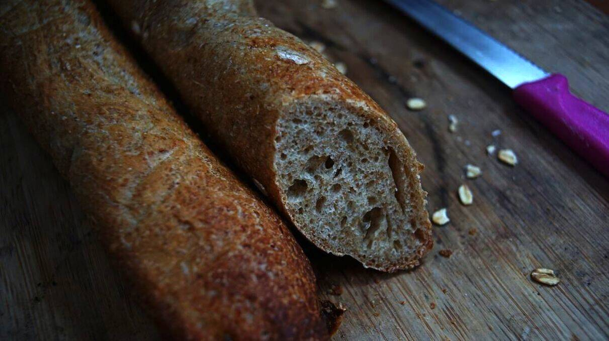Our sunny day cooking schedule would look like this:
- Put food in the cooker tray at 0900-1000, take the tray outside on Pino's bow.
- Let the food cook(it could take 1-2 hours).
- Eat the solar-cooked food for lunch.
- Between 1300-1700, cook food for dinner (usually a part of the meal, like rice with the topping cooked on the LPG stovetop).
In British Columbia summer days are long, making it possible to cook food at 1700. The closer the sun gets to the horizon, the harder it is to find a good angle for the cooker, it is why it is better to prepare meals in the morning or in the early afternoon.
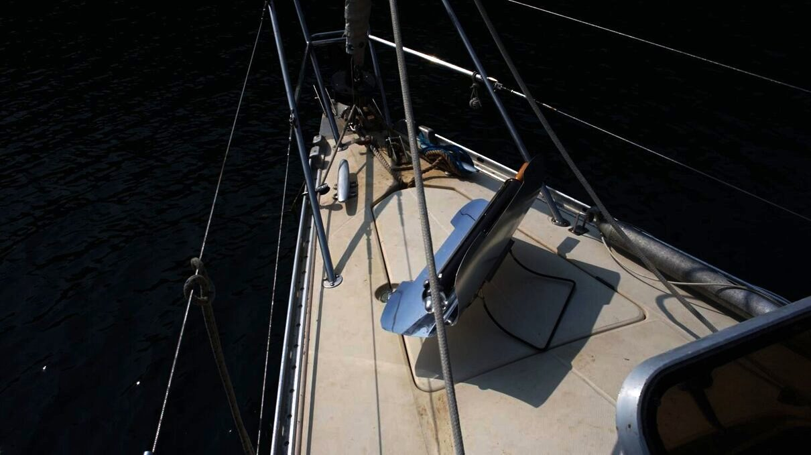We liked to place the cooker on the bow, on the space above the anchor locker just ahead of the forward hatch. That space is relatively flat, which keeps the cooker levelled and prevents spills (if cooking beans, before they have time to soak in the cooking water). On a rounded-surface, the cooker can rock.
When is the food ready?
Cooking times on a very sunny day resemble those from cooking on a stovetop(or in an oven), without a pressure cooker. A half-cake recipe cooks in about 30 minutes, a baguette takes an hour, a 1/2 cup of pre-soaked black beans take 1-1h30 hours, etc.
The reason the cooking time is comparable is because the tray can't hold a lot of food. Our tube is sized for two people. For instance, 1 cup of pre-soaked chickpeas was the max quantity for a solar tube with an inner diameter of 5.5cm(17in). The tube can only accomodate half bread or cake recipes(we cook them in two batches, one right after the other, see details below).
Your nose knows best. In the summer the forward hatch is always open, and because a boat at anchor points in the wind the breeze carries the smell of the cooking food inside. The smell emanating from the bow is a clear indication of whether or not the meal is ready.
We began to rely on our noses instead of looking at the time. Time doesn't mean much when solar cooking because sun cookers don't put out a constant heat like a traditional oven, the temperature inside the tube changes depending on cloud coverage, or if the boat(and the cooker) move out of alignment for too long.
Obstacles to cooking
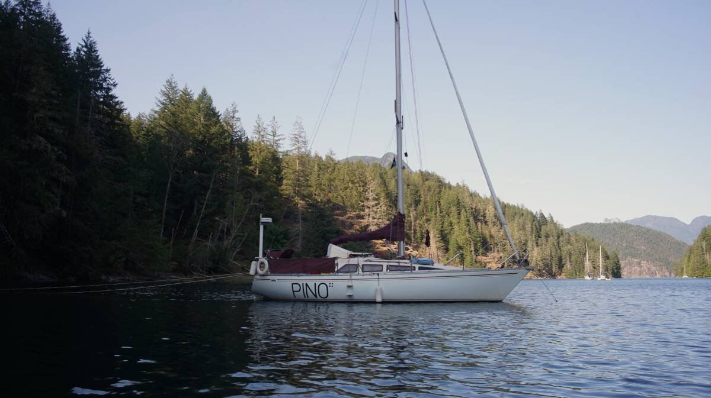Land obstructions. In bays surrounded by tall mountains the sun sets early, cutting down on permissible cooking hours. When Pino is stern-tied to a tree, or to a rock face, it is like being on land, the boat is still and it's easier to set the cooker, but proximity to land means that it will eventually cast a shadow.
When stern-tied in Roscoe Bay the sun fell behind the tree line we were tied to at around 1700 everyday. Boats tied to the opposite side of the bay had more sun late in the day, but in the morning would have to wait for the sun to rise above the tree line.
Windy days. On a windy day the boat would turn in a way that could move the cooker out of alignment, but it would always return to the same position. We found that it didn't alter the cooking time too much. We cooked food on the bow in fresh wind without any issues, although we liked to place stoppers(shoes, or ropes) at the foot of the cooker. With food in the tray the cooker becomes bottom heavy and won't tip easily, even when the reflectors are near-vertical, but we preferred to add stoppers or to tie short lengths of rope to it just so we wouldn't have to think about it.
Calm days. Cooking on a calm day, or when the wind was unstable, was challenging because the boat's position was everchanging. On a calm day a boat "walks" around its anchor on the sea floor(this movement is worse with an all-rope rode, the weight all-chain restricts the radius a bit more). The wake from a passing boat or dinghy was enough to push the boat into a new position, which meant having to re-adjust the cooker constantly. On calm days, solar cooking occupied more of our time because of the constant re-aligning.
Shadows. While keeping the solar cooker on the bow was the best spot, there were still parts of our boat that would create significant shade, slowing the cooking time. We had moments when the wind direction kept the boat in line with the sun with the furling headsail casting a big shadow on the cooker. Other times the sun was behind the boat with the mast in the way. We've experimented with placing the cooker in the cockpit, but that too was tricky because depending on the time of day, the sun would be too low and then the bimini too became a problem. No part of our boat is 100% dependable at all times, but in all, we found the bow to be the most reliable spot.
Dry foods can burn fast
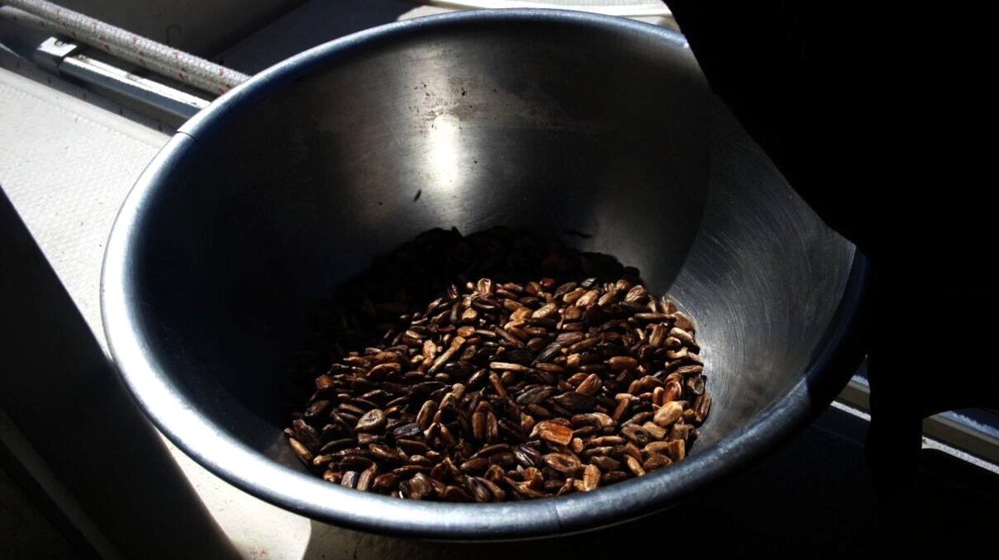Some foods, like coffee beans and sunflower seeds, require careful monitoring.
On a sunny day the temperature would rise quickly and burn the dry beans and seeds. Our noses would tell us when the cooker got to temperature, after which we would check on the food every 10 minutes.
Roasting coffee with the sun
Yes. It works. Our friend Cathos gave us a bag of green coffee beans and we decided to try roasting them in the solar cooker.
As mentionned above, it requires constant monitoring, but it is worth the extra attention.
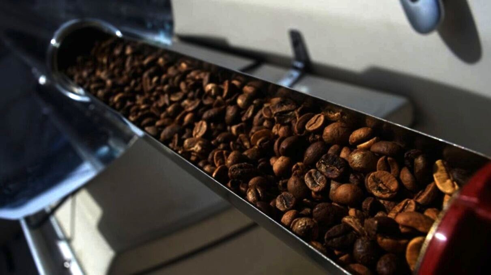The first batch was too light, but the second was just right. We prefer darker roasts.
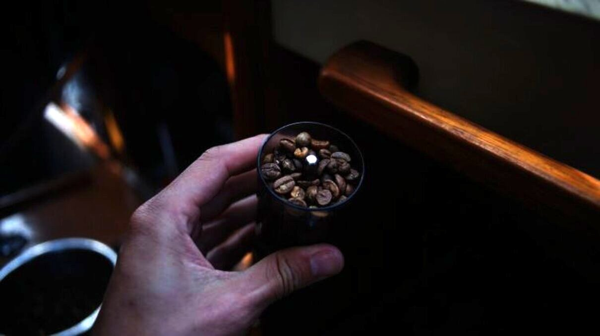 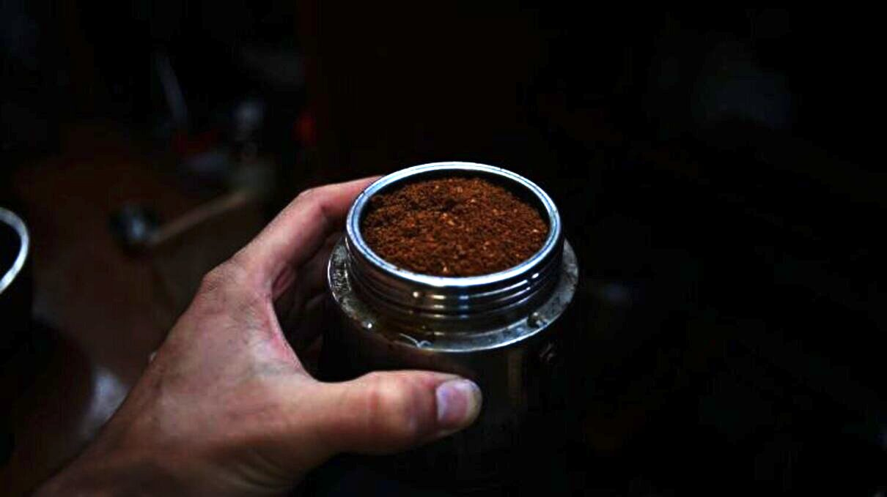Roasting coffee beans in a solar cooker is a very joyous, but terribly distracting experience. It is difficult to focus on work with the smell of freshly roasted beans wafting through the cabin.
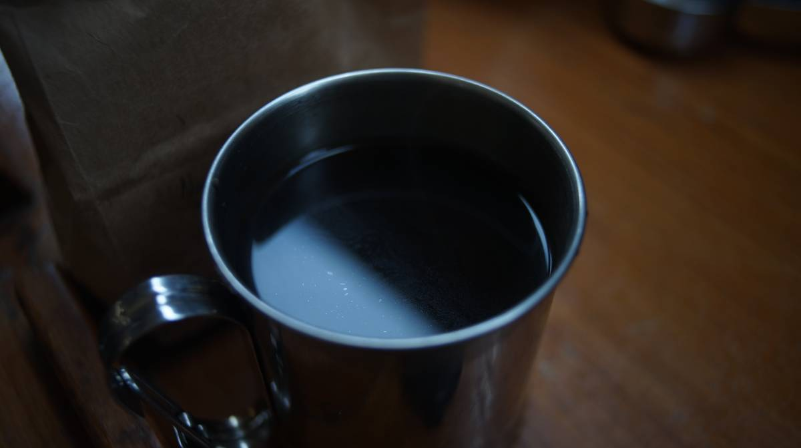That first cup of freshly-roasted coffee was so, so good!
High temperatures
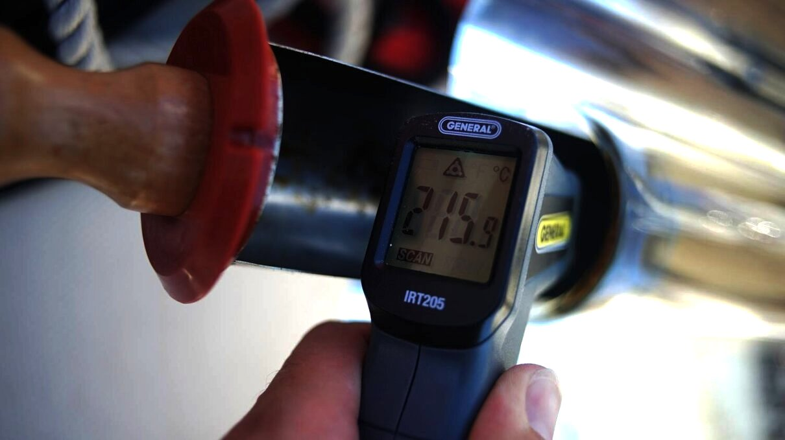Our friend Josh lent us his electronic temperature reader so we could measure the heat inside of the tube on a sunny summer day. The above temperature was measured in early June at around 1100.
The solar cooker's outer tube is cold to the touch, but the inside tray can get dangerously warm. One day we dropped the end of the cooking tray on Rek's leg and it left a very bad burn. We like to keep oven mitts outside when cooking, so we can lay the tray on it when the food is done, or if we need to stir/flip items in it.
Baking with the sun

Using parchment paper when baking. When cooking bread we would make full recipes but would cut the dough in two and cook them separately so the bread would not expand too much in the tube. If food expands too much it may get stuck. When making bread, or cake, we always lined the tray with parchment paper so that the dough would not stick on the inner tube.
Bread took about 2 hours total, 1 hour per baguette, with the baguette flipped every 30 minutes(one end of the cooker cooks at higher temperatures than the other).
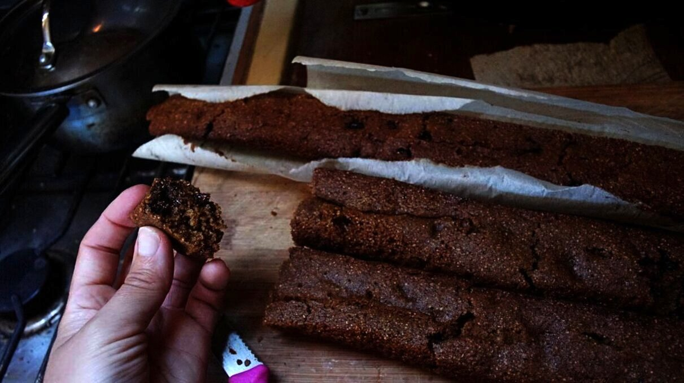A cake could take 1 hour total for a full cake recipe, 30 minutes per cake. To cook a cake I'd line the tray with parchment paper and spoon in the uncooked batter evenly throughout the tray. Getting the cake out without breaking(due to it being a long thin tube) is difficult, but possible, it helps to flop it onto a cutting board or dish matching the length of the tray.
Cleaning the tube
We would not use the cooker to re-heat pasta sauce, which could splash and encrust the inside of the tube. Cleaning the tube isn't too bothersome, but it is certainly more challenging then cleaning a bowl.
If the tube is encrusted with dried bean juice or pasta sauce and that food is cooked into it again, the tray may be difficult to pull out because it is a tight, tight fit, and trapped food further restricts that space.
After cooking beans, we wet the inside of the tube thoroughly, and then use the special brush(that screws onto the end of the tray) to clean it. When there is a lot of dirt, we turn the tray from side to side so that its edges can scrape it away. We try not to do full turns with the tray as to not accidently unscrew the brush and have it get stuck in the tube.
Advantages
Keeps heat outside. It keeps unwanted heat outside in the summer. Using a pressure cooker inside steams up the boat.We only used the pressure cooker once this summer, as opposed to using it every 2 days(like in the winter).
Reduces use of LPG. On a sunny day we don't have to worry about running of fuel, the solar cooker can run as long as there is sun.
When the season was over, we found that our LPG tank still had plenty of fuel. Usually, we go through a 20lbs tank in 3-4 months.
Security. We had issues with the controller for our solenoid this summer and had to bypass it entirely to cook with our LPG stove. Whenever we wanted to cook, we had to go outside and open the propane tank valve and to close it again after use(for safety's sake). This was a breakage that didn't prevent us from cooking, but other things can happen, having a cooker that isn't gas or power reliant we found was a good security.
Failures?
The only food we couldn't cook in the solar cooker was soy beans. Soybeans have a very long cooking time, and they make a great big mess. We left them for 2 hours once with no apparent end in sight. After that, we decided it wasn't worth it and instead continued to cook other beans like black beans, and kidney beans. Chickpeas cook well in the cooker, as do lentils.
Securing the cooker while sailing
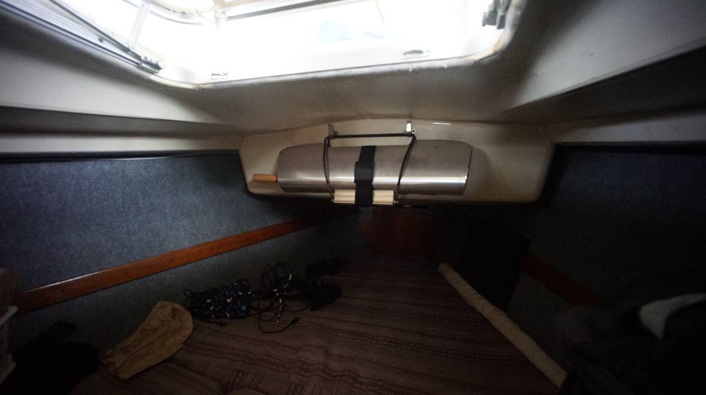Evacuated solar tubes are made of strong borosilicate glass, but can still shatter. We installed two stainless steel hooks on the inside of the anchor locker in the v-berth, and hang the cooker there during transits. We prefer not to leave the cooker outside when it is not in use.
What we cooked in it
We found the solar cooker to be most useful when preparing foods with long-cooking times.
Black beans, kidney beans, brown lentils, bread, chocolate cake, chocolate chip cake, beets, potatoes, seitan, coffee(roasted green beans), sunflower seeds, calrose brown rice, chickpeas, etc...
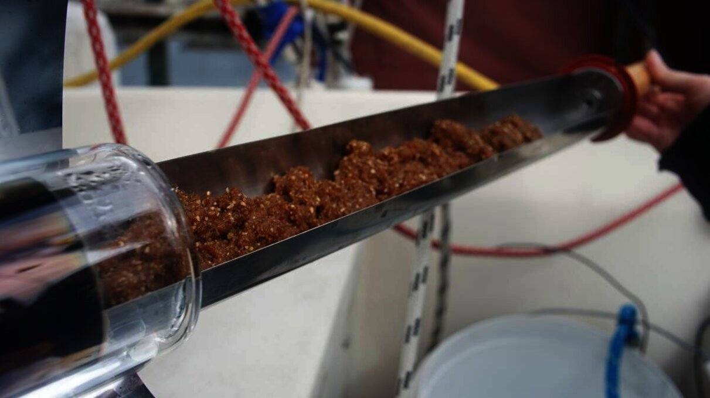 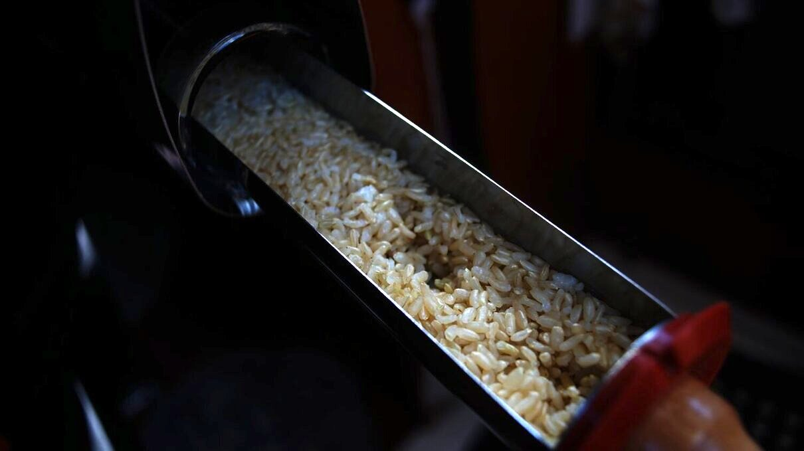We look forward to cooking with it again next summer.